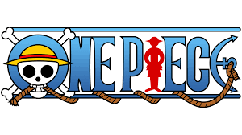
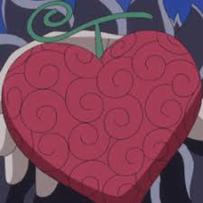

Tipos de Frutas
- Paramecia
-
Paramecia é um dos três tipos de Akuma no Mi. Quem as come ganha o poder de modificar sua estrutura corporal, produzir substâncias e manipular essas substâncias e o ambiente (como um terremoto), dependendo da Akuma no Mi.

- Zoan
-
Zoan é um dos três tipos de Akuma no Mi. Este tipo de fruta permite ao usuário transformar-se em outras espécies e formas híbridas entre espécies à vontade. Os tipos de Zoan são especialmente eficazes no combate próximo. O termo foi usado pela primeira vez quando Dalton usou sua Akuma no Mi para atacar Wapol.
- Logia
-
Logia é o mais raro dos três tipos de Akuma no Mi. Aqueles que comeram uma fruta Logia recebem o poder de transformar a composição de seu corpo em um elemento natural à vontade, bem como criá-lo e controlá-lo.